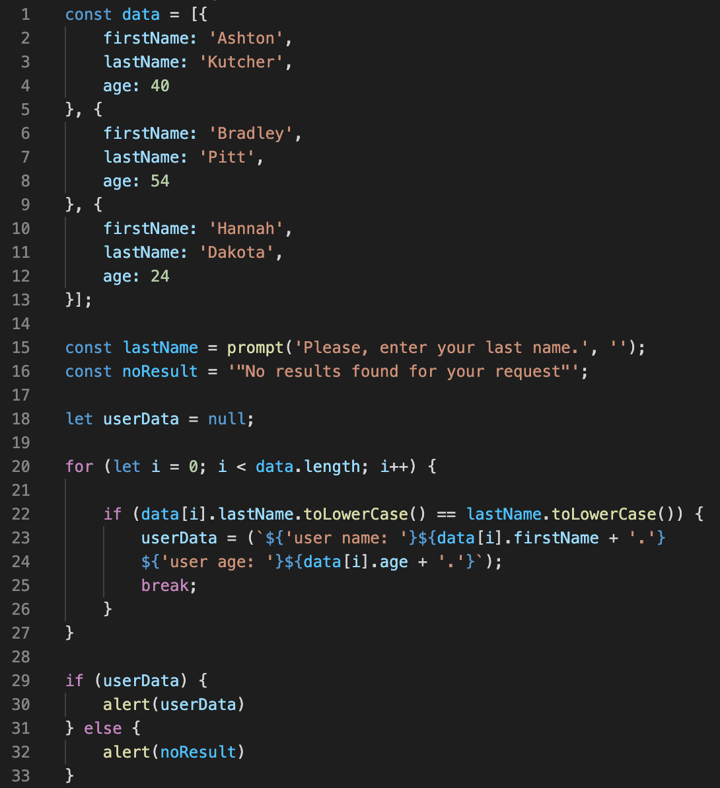

-
Name:
Viktar Hubarevich. -
Contacts:
+375 29 195 76 24 (A1), +375 29 319 19 05 (A1). -
About myself.
My task is to become a financially independent person. I think programming can help with this. If we talk about myself, then I can confidently say that I am a purposeful person. I noticed that throughout my life I always give myself a challenge, whether I can or not, and thanks to this quality, I move forward. Therefore, with my studies, I am always on you. After university, I moved to live in Minsk, where I work as a chief specialist in the Department for Supervision of Safe Operations in Industry of the Republic of Belarus. And I decided that it was time to move on and my choice was on programming. -
Skills.
I am a student at TeachMeSkills programming school. I am studying at the Frond End developer. -
Sample code:
 -
Experience.
I am a student at TeachMeSkills programming school (FrondEnd Developer). My works:
-
Education.
Click me
2009-2014 Belarusian State University of Transport (Mechanical engineer), Diploma of Higher Education;
2013-2014 Belarusian State University of Transport (Logist-economist), Retraining Diploma at the Higher Education level;
2014-2016 Belarusian State University of Transport (Master of Engineering Science), Master's degree;
2018-2019 Streamline (Elementary Level (CEFR A2)), English (Sertification № 6-1819-28889);
2019-2020 Streamline (Pre-Intermediate Level (CEFR A2+)), English (Sertification № 2-1920-32323);
2020-2021 TeachMeSkills (Front End Developer), Front End.
-
English level:
Pre-Intermediate(A2).